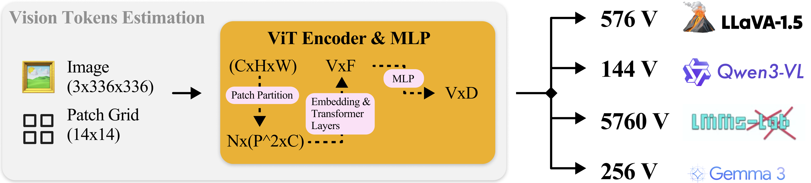

In the shift from text-only models to Vision Language Models (VLMs), we often talk about “parameters” and “emergent reasoning.” However, there is a hidden currency that governs the performance, cost, and feasibility of these systems: Visual Tokens (VT).
While Large Language Models (LLMs) are natively blind, they “see” by consuming images that have been decomposed, projected, and flattened into a format they can digest. This transformation isn’t free. Whether you are building a real-time assistant or an OCR pipeline, the number of visual tokens your model generates is the primary lever for inference latency, VRAM consumption, and context window management. Understanding the computational overhead of these tokens is no longer just an academic exercise—it is a production necessity.
In this first installment of our series, De-mystifying Multimodal Learning, we break down the mechanics of how images become language-compatible vectors. Specifically, we will cover:
What we will cover:
Preamble: How do LLMs see?: An architectural deep dive deep into the anatomy of Vision Language Models (VLMs) and the birth of the Visual Token.
Calculating Visual Tokens: Present a practical guide to estimating token counts across different SOTA strategies—from Qwen’s dynamic merging to LLaVA’s high-resolution grids—without running a single line of inference.
Impact of Token Count: Analyse of how these tokens impact the “three pillars” of production: Context Windows, Latency, and VRAM.

Figure 1: Overview of the Vision Token count estimation process. The estimated counts are done based on Spatial Merge Size of 2, AnyResolution of 3x3 windows and Spatial Average Pooling of size 4. C, H, W represent the channels, heigth and width of the image, whereas N and P are the number of patches and the patch dimension respectively. F and D are embedding dimension sizes outputted from the vision encoder and the MLP and V is the number of visual tokens, which depends on the type of encoder, MLP and the re-sizing of images, i.e. the actual H and W. In the section below, we dive deeper into the difference between each of the models reported on the right/
Preamble: How do LLMs see?
It is clear that LLMs cannot see images, so how do we allow them to understand image inputs in the first place?
Architecturally Vision Language Models are constitued by three major components:
Let X∈RC×H×W be an image and t∈Σ be a text input, where Σ is the input space of character sequences.
Furthermore let fvθ be a contrastive pre-trained Vision Encoder, defined as: ,
where V is the number of visual tokens and F their embedding dimension.
Let mγ:RV×F→RV×D be a modality connector and gϕ be the LLM mapping an embedded input token sequence to an output token sequence.
After this heavy notation information, we get to the guiding question of this post:
What is a Visual Token?
Due to Contrastive Training (some extra sources here and here) Vision Encoders learn to be powerful feature extractors, compressing visual information into vectors (tokens) semantically aligned with language.
Practically, the processing flow of fvθ is broken down into:
1. Patch Partitioning
The first step is breaking the high-resolution image X into a grid of fixed-size patches.
Assuming our image has 336×336 pixels and we use a patch size of P=14, in standard vision encoders like CLIP, we divide the image into 24×24=576 distinct squares.
Mathematically, the image is reshaped from X∈RC×H×W into a sequence of flattened 2D patches xp∈RN×(P2⋅C), where N is the total number of patches.
2. Linear Projection and Position Embeddings
These are simply raw pixel values. To convert them into vectors fvθ projects each flattened patch into a latent representation through a linear layer.
Given the lack of spatial prior of Vision Transformers (ViT) (see here for a difference between CNNs and ViTs), these vectors are equipped with learnable positional encodings, injecting “GPS-like” coordinates into latent representations.
3. Transformer Layers
The resulting vectors are passed through several Transformers Layers consisting of Multi-Head Self-Attention and MLPs, whose output is the representation of a patch within the context of the whole image.
This full process produces X’=fvθ(X)∈RV×F, we obtain a sequence of vectors with F being the embedding dimension.
Connecting Modalities
Getting the actual vision tokens from X’ is just a matter of passing it through a connector, obtaining
where D is the expected embedding input size of gϕ.
Calculating #Visual Tokens
Now that we know what Visual Tokens are, you might wonder
How many Visual Tokens VLMs produce given image input size?
Original Recipe
Within the first VLM architectures (Liu et al., 2023) this estimation is straightforward.
First generation VLMs relied on Vision Encoder which have a fixed input resolution and a patch size (PS). What this means is that whatever its input size, the picture would always be re-scaled to H×W. This implies that, given both H and W, the final number of visual tokens, i.e. dimenson V
The Resolution Trap
This came with several problems:
Images resolutions were completely disregarded. Having the same amount of tokens for images of size 336^2 and 1024^2 does not make sense.
Not only does not make sense, it also does not work. Especially for OCR, visual compositional reasoning and small object detection tasks.
However, simply making vision encoders which could support higher resolutions was also not something feasible. First, because now every image would have needed to be re-sized to say 1024×1024. Secondly, tripling the supported image heigth and keeping the same patch size results in almost 10x the amount of visual tokens.
Modern Approaches
Strategy A: The Dynamic Merger
We have to start with the game-changers: the QwenVL-2.5 and 3 series (Bai et al. 2025, QwenTeam, 2025). These models ditched the “fixed resolution” rule entirely. Instead of squashing every image into a square, they process images at their native resolution. This sounds great, but it complicates our math: if the image size varies, so does the token count. To calculate it, we need a specific value from the model’s config.json called the Spatial Merge Size (SMS). Think of SMS as a compression factor—it tells the model how many raw image patches to pool together into one visual token.With this in mind, our formula becomes a bit more dynamic:
The Takeaway: You get perfect aspect ratios without distortion. The catch? You need to be careful. Large images (or several of them) can silently eat up your context window much faster than you expect.
Strategy B: The Multi-Grid / AnyRes
Around the same period LLaVA-Next/OneVision (Liu et al., 2024, Li et al., 2024b) came up with a clever, yet expensive encoding technique called “Dynamic-High Resolution”/”Any Resolution”. Depicted in Figure 2, it consists of splitting the image into k×k grids, with k∈1,9 before the vision encoding.
This means repeating the encoding process (k×k)+1 times, with the 1 being the picture in its entirety.
Figure 2: Illustration of Dynamic High Resolution on 2x2 grid from LLaVA-NeXT paper.
Although this results higher detail understanding given the entire focus of the encoder on smaller portions of the image, it also most crucially implies an enormous increase in Visual Token count. Given the calculations in the original recipe, we have
In a couple of words a big trade-off: Massive detail vs. Massive token count.
Strategy C: The Fixed Downsampler
Gemma3 (Gemma-Team, 2025) family of models, the most recent open source VLM from gdm also employes a fixed input sized Vision Encoder SigLIP (Zhai et al., 2024).
The main difference between their technique and Strategy A is the easy but clever solution to handle higher resolution images, applying a spatial average pooling and therefore increasing the resizing input size of the model to 896. Thanks to the pooling, this yields a fixed amount of visual tokens which corresponds to
with the pooling being applied within the modality connector.
A common denominator in all of these is the special tokens, which are added for every picturem signaling the beginning and end of the visual content.
Figure 2: We report the increase of Visual token count given the image resolution input. The image is assumed AnyRes assumes a 3x3 grid and the SMS and pooling are equal to 2.
Visual Token Count Impact
We have defined what a Visual Token (VT) is and established formulas to calculate V for different architectures.
But why does this specific number matter? Why should a machine learning engineer care if an image is represented by 256 tokens (Strategy C) or 2,500 tokens (Strategy B)?
The answer lies in the constraints of production environments: Context Windows, Latency, and VRAM.
1. The Context Window Budget
Every LLM has a hard limit on its input size, denoted as the Context Window (Lmax). In text-only models, this budget is consumed solely by the system prompt, user history and input prompt. In VLMs, Visual Tokens consume this budget aggressively. If we denote the available context for reasoning and history as Ctext, the relationship is effectively zero-sum:
where N is the number of images.
For a “Strategy B” model (like LLaVA-Next) using a 3×3 grid, a single image might consume ≈2900 tokens. If you are serving a model with a 4k or 8k context limit, a single image can consume 30-70% of your entire input capacity.
This leaves little room for few-shot examples or long conversation history, potentially degrading the model’s ability to follow complex instructions.
2. Inference Latency: The “Pre-fill” BottleneckIn production use-cases, inference cost is often a function of latency. Large companies typically enforce fixed input sizes to ensure predictable response times. Visual Tokens disrupt this predictability. When a VLM processes a request, it undergoes two phases:
a. Pre-fill: The model processes all input tokens (Text + Visual) in parallel to compute the Key-Value (KV) cache.
b. Decoding: The model generates the output one token at a time.
Visual Tokens sit in the Pre-fill phase. A high VT count dramatically increases the Time To First Token (TTFT).
Even with linear attention optimizations (like FlashAttention), processing 3,000 visual tokens requires significantly more floating-point operations (FLOPs) than processing 256. If your application requires real-time responsiveness (e.g., a voice assistant “seeing” via camera), the difference between 50ms and 500ms in pre-fill latency is a dealbreaker.
Figure 3: Figure from FastVLM paper from Apple MLR, illustrating how Vision latency dominates at high resolution. Breakdown of FastVLM’s time to the first token for different image resolutions. The vision encoder is FastViT-HD, and the LLM has 1.5B parameters.
3. The Cascading Impact on VRAM
Perhaps the most critical “hidden” cost is memory. When serving models using high-performance engines like vLLM or TensorRT-LLM, the throughput is bound by how many requests can fit into the GPU memory simultaneously (batch size).
This depends heavily on the KV Cache—the memory required to store the attention context for every token in the sequence. Higher VT Count → Larger KV Cache per request.Larger KV Cache → Fewer requests fit in VRAM. Fewer Requests → Smaller Batch Size.T his creates a cascading effect on cost.
If a high-resolution strategy increases your visual tokens by 10×, you might be forced to reduce your batch size by roughly the same factor to avoid Out-Of-Memory (OOM) errors. This effectively multiplies your cost per inference, as you need more GPUs to handle the same traffic.4. Operational NecessityThis brings us back to the premise of this post. For experimental research, we often ignore these overheads in favor of higher benchmarks. But for production deployment, predictability is king. To optimize serving, engineers need to:
Dynamically adjust expectations: If a client uploads a high-res image to a “Strategy A” (Dynamic) model, the system must instantly calculate VQwen to check if it fits the current VRAM budget.
Downsample intelligently: If Vcalculated exceeds the limit, the system needs to resize the input image before it hits the Vision Encoder to meet a specific token target.
This is why the formulas in Part 2 are not just theoretical trivia—they are essential tools for building robust, cost-effective Multimodal systems.
Conclusions & Key Takeaways
Representative Models
Strategy
Resolution Logic
Token Efficiency
LLaVA1.5
Standard Resize
Squash to fixed H×W
Fixed Count
Qwen3-VL
Dynamic Merger
Native (Preserves Aspect Ratio)
Linear Growth
LLaVA-OneVision
AnyRes / Multi-Grid
Grid Split (k×k) + Overview
High Cost
Gemma3
Fixed Downsampler
Resize + Spatial Pooling
Highly Compact
Table 1: We report a comparison of Visual Token calculation strategies across modern architectures in current SOTA VLMs.
Visual Tokens (VT) are the bridge between the image and language world, but they are also the primary bottleneck in VLM deployment. As we have seen, moving from a fixed-resolution model (like Gemma 3) to a dynamic one (like Qwen 2.5-VL or LLaVA-Next) can increase your input size by an order of magnitude.Here are the key takeaways to keep in mind when building multimodal systems:
Tokens = Pixels: High resolution doesn’t always mean high cost. It depends entirely on the architecture (e.g., Fixed Downsampler vs. Multi-Grid).
The “Pre-fill” Trap: Visual tokens are processed before the first word is generated. If your latency is high, check your image resolution before checking your LLM size.Context is Zero-Sum: Every visual token you use is one less token available for conversation history or few-shot examples.
Calculate, Don’t Guess: Use the formulas provided in Part 2 to pre-calculate token counts. This allows you to dynamically resize images or adjust batch sizes to prevent OOM errors in production.
Multimodal learning is evolving rapidly, but the fundamental constraint remains: compute is finite. Mastering the math of Visual Tokens is the first step toward mastering VLM efficiency.
Citation
If you use this work, please cite:
@misc{nulli2026demistifying,
title={De-mystifying Multimodal Learning: The Hidden Cost in Vision Language Modelling.},
author={Matteo Nulli},
year={2026},
url={https://matteonulli.github.io/blog/2026/demystifying1/}
}